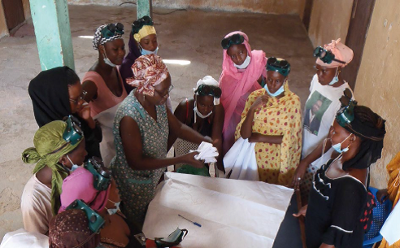

ENSEMBLE VERS L'AUTONOMIE
PROFESSIONNELLE ET LE DÉVELOPPEMENT ÉCONOMIQUE
Nous Formons et insérons professionnellement. Notre objectif : donner les clés de
l'indépendance aux jeunes et aux
veuves. De la formation artisanale à l'entrepreneuriat, nous façonnons un avenir
solide pour
tous.
Apprendre, c'est possible ! Nous offrons des formations spécialisées dans les métiers de l'artisanat et bien
d'autres encore. Pour les jeunes et les veuves, l'alphabétisation est également une priorité, ouvrant ainsi la
voie vers de nouvelles opportunités.

Insertion professionnelle
Découvrez nos programmes d'insertion professionnelle : coopératives et microentreprises pour les veuves et
femmes défavorisées, avec un accompagnement complet (technique, financier, matériel), et développement agricole
avec unités de transformation et conservation.